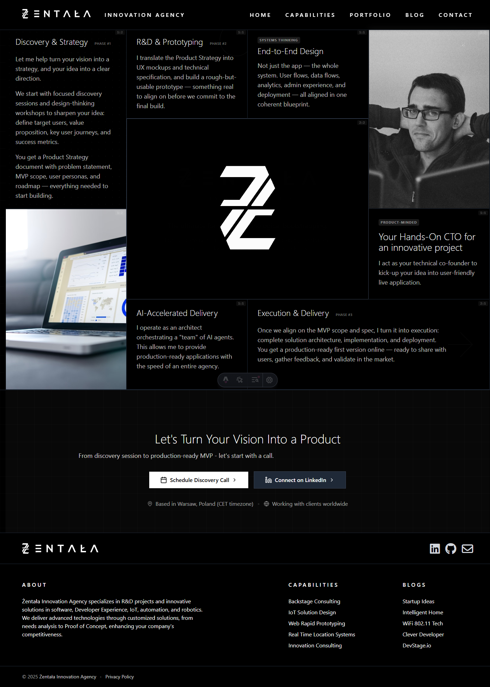
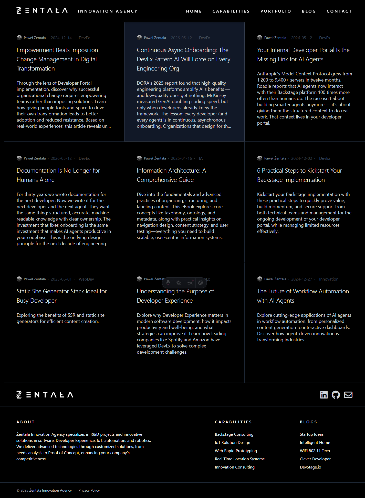
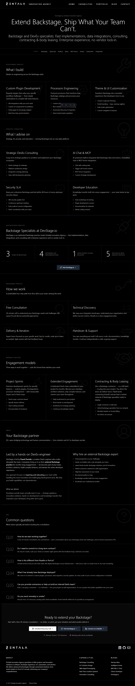

Orient
Nav and TOC motion should say: you are here, this is a route, this context changed.
The site has strong visual identity and selected good micro-interactions. The gap is not "no animation"; the gap is uneven meaning.
Core finding: the center of the page feels alive, while orientation surfaces like navbar and footer feel static. Motion should help users understand route, state, priority, and intent.
The bento and CTA areas already communicate exploration and forward movement. Header navigation, footer links, and blog cards mostly rely on color changes.

Nav and TOC motion should say: you are here, this is a route, this context changed.
Cards and images should say: inspect this, the whole surface is interactive, there is more behind it.
Primary CTAs should say: continue forward. Secondary and external CTAs need quieter, different signals.
Current desktop nav only changes color. It does not communicate active route, destination confidence, or page transition intent.
Recommendation: underline/rail scale on hover and focus. Keep active route visible. Do not change font weight because it creates layout jitter.
The footer hover mark is a good idea, but it appears abruptly because the pseudo-element is created only on hover.
P0
Change: create the underline at rest with scaleX(0), then animate to scaleX(1). Social icons get a tiny lift, not bounce or brand-color fireworks.
Arrow translation says "continue". Border changes say "selected". Active scale says "pressed". This should become the reference grammar.
Arrow shift + subtle sweep. Highest confidence and commitment.
Border + arrow only. Exploration without over-selling.
Diagonal icon nudge. Communicates leaving current context.
Large clickable article surfaces should respond as surfaces, while metadata links stay secondary.

Without shared durations, easings, and distances, each component invents its own rhythm. Today values are scattered across 150ms, 200ms, 300ms, 500ms, 700ms, and 800ms.
Use: --motion-fast, --motion-base, --motion-slow, --motion-intro, --ease-standard, --ease-enter, --motion-lift-sm, --motion-shift-sm.
Motion tokens, reduced-motion policy, nav active state, footer sweep.
CTA semantic variants, article-card affordance, external-link movement.
Bento calibration, page-entry sequencing, article TOC active marker.
Every hover animation needs keyboard focus parity. Reduced-motion users should keep state changes without non-essential transforms.
Acceptance criteria: focus-visible states, active route, no layout shift, no mandatory animation for comprehension, no transform-heavy reduced-motion path.
Keep bento expressive. Make nav and footer oriented. Make CTAs semantic. Make blog cards invite reading. Standardize timing so the whole site feels authored.
